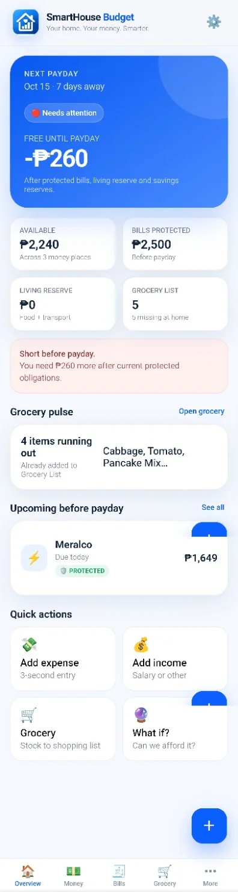
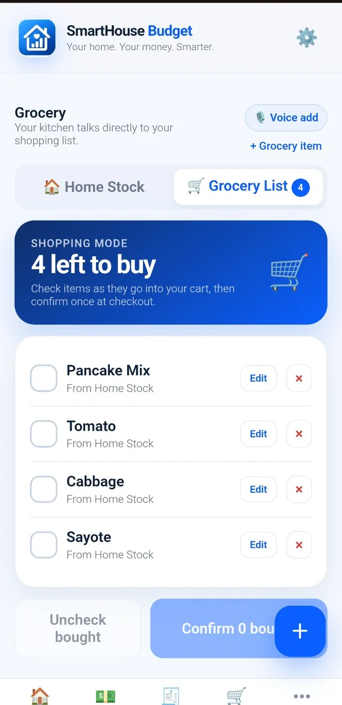
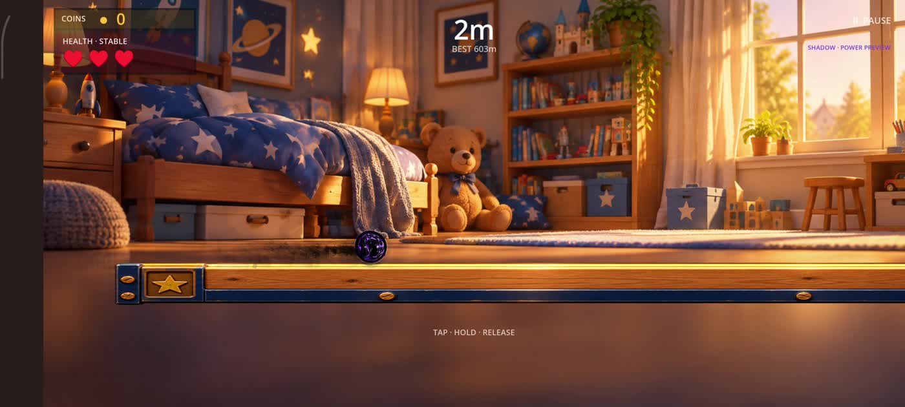
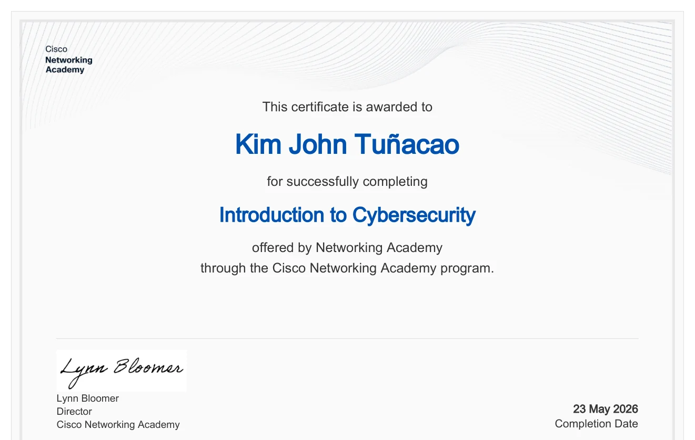
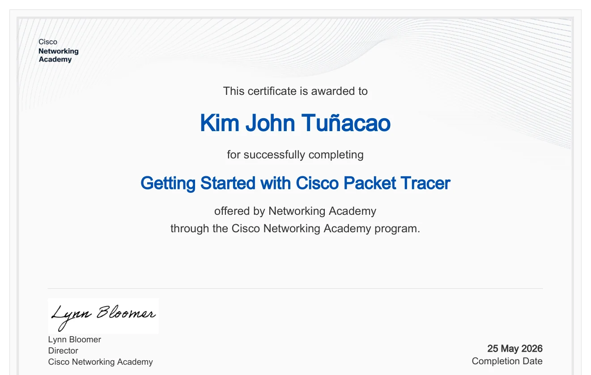
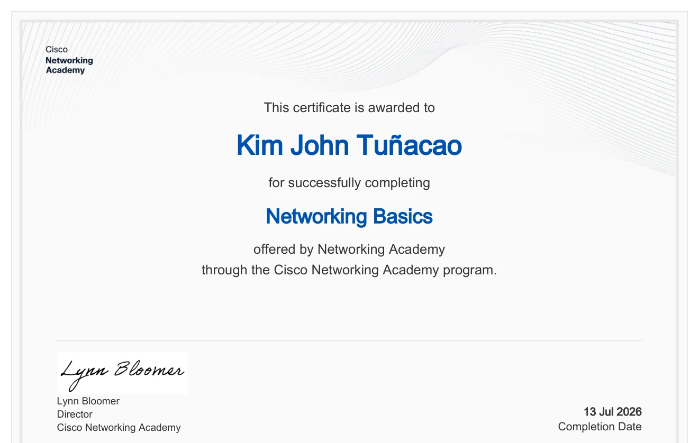

01 / SCHOOL MANAGEMENT · WEB APPPilot · Demo data
SchoolPulse / JLS Portal
Role-based school operations, attendance, finance dashboards, and careful release validation for a real institutional workflow.
Explore the case study ↗I help turn ideas into practical digital solutions with AI-assisted workflows, hands-on testing, technical support, and careful execution. Real work. Clear scope. No invented results.
Based in the Philippines · Remote-ready · Evolving through continuous technical learning
Every project here is presented with real evidence, clear development status, and a description of what I actually worked on.
Role-based school operations, attendance, finance dashboards, and careful release validation for a real institutional workflow.
Explore the case study ↗

Payday planning, bill protection, household balances, inventory, and grocery workflows in a mobile-first finance app.
View project ↗

Private canteen-management interface for tracking stock, receipts, counts, daily cash and reports.
View project ↗
▶ Actual gameplay recordingA one-thumb autorun game featuring evolving roads, different worlds, collectible coins, and a testing-led development process.
Watch the gameplay ↗
Privacy-conscious location-sharing concepts, family tracking interfaces, map/globe experiments, and trip-safety workflows.
View project ↗Personal multi-agent AI system with differentiated roles, approval gates, human review, and a working prototype.
Watch existing NERO demo ↗A fully redesigned fictional specialty café website with real free-stock photography, responsive layouts, and elegant UI interaction.
Open the website demo ↗Offline-first randomized date and activity planner. Personal Android project.
Wake-word assistant prototype with voice-command workflows, reminders and approval concepts.
Technology explainers, production planning, narration, and creative workflow experiments.
AI is part of the workflow, not a substitute for accountability. I define requirements, give structured direction, check what comes back, and document real results.
Structured coding assistance for prototypes, feature implementation, debugging, and refactoring with manual review.
Role-separated agents, scoped operations, approval stages, and verifiable outcomes in Project NERO.
Project context, acceptance criteria, reproducible tasks, and clear constraints rather than vague one-line requests.
Reviewing diffs, checking bugs, running or inspecting tests, recording failed and passed stages honestly.
Using AI to help organize findings, draft operational documents, and prepare information for human verification.
Research, story planning, visual direction, and video production assistance for NERO Tech Channel.
These are tools used or explored across personal projects. No professional certification or mastery is implied.
A guided demonstration of the decisions that turn an idea into a reviewable result. Select a stage to see the method and connected project evidence.
Document the objective and constraints.
Services are scoped to current strengths and supported by work examples, not imaginary agency experience.
Research, documentation, organized trackers, AI-assisted drafts, and online administrative workflows.
Reproducible bug reports, UI checks, test cases, and precise feedback for website and application issues.
Responsive website updates, frontend prototypes, troubleshooting, and carefully scoped AI-assisted tasks.
My technical background began in maritime engineering, where following procedures, troubleshooting equipment and working safely mattered every day. I'm applying that same discipline to software, AI-assisted workflows, Linux, networking and cybersecurity learning.
These projects are personal, family, educational, or demo builds. I distinguish prototypes from live apps and simulated work from paid client engagements. Careful validation matters more to me than a flashy success claim.
Marine engineering built a foundation in technical discipline, equipment monitoring and safety. Personal software projects and Cisco coursework extend that foundation into digital technology.
Shipboard engine operations, machinery monitoring, preventive maintenance and structured teamwork.
Personal PWA, Android, AI-agent and game projects, with code review, testing and careful iteration.
Three completed Cisco Networking Academy courses. Further cybersecurity training remains in progress.
Three Cisco Networking Academy course completions, with actual document previews and dates. These are course certificates, not CCNA or a professional certification exam.

Completed 23 May 2026
Course completion · Cisco Networking Academy

Completed 25 May 2026
Course completion · Cisco Networking Academy

Completed 13 Jul 2026
Course completion · Cisco Networking Academy
Junior Cybersecurity Analyst learning path: in progress, not yet a completed credential.
Privacy note: public preview images exclude the certificate identification line. Original certificate PDFs are not distributed from this website.
Available for remote technical VA, QA, website support, and clearly scoped project work.